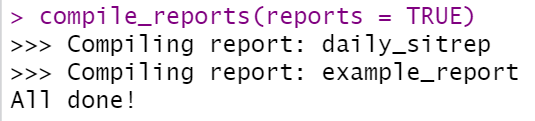

42 Organisation des rapports de routine
Cette page couvre le “package” reportfactory, qui est un complément à la page sur Production de rapports avec R Markdown .
Ce package est adapté aux cas où on exécute des rapports régulièrement (par exemple, quotidiennement, hebdomadairement…). Il facilite la compilation de plusieurs fichiers R Markdown et l’organisation de leurs fichiers de sortie. Essentiellement, il fournit une “fabrique de rapports” (“factory”) qui est une machine d’exécution à partir de laquelle vous pouvez exécuter les rapports R Markdown, obtenir des dossiers automatiquement horodatés pour les fichiers de sortie, et avoir un contrôle de version “léger”.
reportfactory est l’un des “packages” développés par RECON (R Epidemics Consortium). Voici leur site Web et Github.
42.1 Préparation
Charger les packages
Depuis RStudio, installez la dernière version du package reportfactory depuis Github.
Vous pouvez le faire via le “package” pacman avec p_load_current_gh() qui forcera l’installation de la dernière version depuis Github. Tapez la chaîne de caractères “reconverse/reportfactory”, qui spécifie l’organisation Github (reconverse) et le répertoire (reportfactory). Vous pouvez également utiliser install_github() du “package” remotes, comme alternative.
# Installer et charger la dernière version du package depuis Github
pacman::p_load_current_gh("reconverse/reportfactory")
#remotes::install_github("reconverse/reportfactory") # alternative42.2 Nouvelle “factory”
Pour créer une nouvelle “factory”, exécutez la fonction new_factory(). Ceci créera un nouveau dossier de projet R autonome. Par défaut :
- “factory” sera ajoutée à votre répertoire de travail.
- Le nom du projet R de la “factory” sera appelé “new_factory.Rproj”.
- Votre session RStudio s’installera dans ce projet R.
# Ceci créera la "factory" dans le répertoire de travail
new_factory()En regardant à l’intérieur de la “factory”, vous pouvez voir que des sous-dossiers et certains fichiers ont été créés automatiquement.

- Le dossier report_sources contient vos scripts R Markdown, qui génèrent vos rapports.
- Le dossier outputs contient les fichiers de sortie du rapport (par exemple, HTML, Word, PDF, etc.).
- Le dossier scripts peut être utilisé pour stocker d’autres scripts R (par exemple, ceux qui proviennent de vos scripts Rmd).
- Le dossier data peut être utilisé pour contenir vos données à partir desquelles vous travvaillez (les sous-dossiers “raw” et “clean” sont inclus).
- Un fichier .here, afin que vous puissiez utiliser le package here pour faire appel aux fichiers dans les sous-dossiers selon leur relation avec le dossier à la racine (voir la page Projets R pour plus de détails).
- Un fichier gitignore a été créé au cas où vous lieriez ce projet R à un répertoire Github (voir Contrôle de version et collaboration avec Git et Github).
- Un fichier README vide, si vous utilisez un dépôt Github.
CAUTION: selon les paramètres de votre ordinateur, des fichiers tels que “.here” peuvent exister mais restés cachés.
Parmi les paramètres par défaut, en voici quelques-uns que vous pourriez vouloir ajuster dans la commande new_factory() :
factory =- Fournit un nom pour le dossier de la “factory” (par défaut “new_factory”)
path =- Désigne un chemin de fichier pour la nouvelle “factory” (par défaut le répertoire de travail)
report_sources =- Donne un autre nom au sous-dossier qui contient les scripts R Markdown (par défaut, “report_sources”)
outputs =Fournit un nom alternatif pour le dossier qui contient les fichiers de sortie du rapport (par défaut “outputs”).
Voir ?new_factory pour une liste complète des arguments.
Lorsque vous créez la nouvelle “factory”, votre session R est transférée vers le nouveau projet R, vous devez donc charger à nouveau le “package” reportfactory.
pacman::p_load(reportfactory)Maintenant vous pouvez lancer la commande factory_overview() pour voir la structure interne (tous les dossiers et fichiers) de la “factory”.
factory_overview() # afficher l'aperçu de la factory dans la consoleL’“arbre” suivant des dossiers et fichiers de la “factory” est affiché dans la console R. Notez que dans le dossier “data”, il y a des sous-dossiers pour les données “raw” et “clean”, et des exemples de données CSV. Il y a aussi “example_report.Rmd” dans le dossier “report_sources”.

42.3 Créer un rapport
À partir du projet R de la fabrique, créez un rapport R Markdown comme vous le feriez normalement, et enregistrez-le dans le dossier “report_sources”. Consultez la page Production de rapports avec R Markdown pour obtenir des instructions. À titre d’exemple, nous avons ajouté les éléments suivants à la fabrique :
- Un nouveau script R markdown intitulé “daily_sitrep.Rmd”, enregistré dans le dossier “report_sources”.
- Les données du rapport (“linelist_cleaned.rds”), enregistrées dans le sous-dossier “clean” du dossier “data”.
Nous pouvons voir en utilisant factory_overview() notre R Markdown dans le dossier “report_sources” et le fichier de données dans le dossier “clean” data (en surbrillance) :

Voici une capture d’écran du début du fihier R Markdown “daily_sitrep.Rmd”. Vous pouvez voir que le format de sortie est défini comme étant HTML, via l’en-tête YAML output: html_document.

Dans ce script simple, il y a des commandes pour :
- Charger les “packages” nécessaires
- Importer les données de la liste linéaire en utilisant un chemin de fichier du “package” here (pour en savoir plus, consultez la page Importer et exporter des données).
linelist <- import(here("data", "clean", "linelist_cleaned.rds"))- Imprimer un tableau récapitulatif des cas, et exportez-le avec
export()comme un fichier .csv.
- Imprimer une courbe épidemiologique, et l’exporter avec
ggsave()comme un fichier .png.
Vous pouvez examiner la liste des rapports R Markdown dans le dossier “report_sources” avec cette commande :
list_reports()42.4 Compiler
Dans une “factory”, “compiler” un rapport R Markdown signifie que le script .Rmd sera exécuté et que la sortie sera produite (comme spécifié dans le script YAML, par exemple en HTML, Word, PDF, etc).
La fabrique créera automatiquement un dossier daté et horodaté pour les sorties dans le dossier “outputs”.
Le rapport lui-même et tous les fichiers exportés produits par le script (par exemple, csv, png, xlsx) seront enregistrés dans ce dossier. En outre, le script Rmd lui-même sera enregistré dans ce dossier, de sorte que vous ayez une trace de cette version du script.
Cela contraste avec le comportement normal d’un R Markdown exécuté en indépendant, qui enregistre les sorties à l’emplacement du script Rmd. Ce comportement par défaut peut donner lieu à des dossiers encombrés et désordonnés. La “factory” vise à améliorer l’organisation lorsque l’on doit exécuter des rapports fréquemment.
Compiler par nom
Vous pouvez compiler un rapport spécifique en exécutant compile_reports() et en fournissant le nom du script Rmd (sans extension .Rmd) à reports =. Pour simplifier, vous pouvez sauter le reports = et juste écrire le nom R Markdown entre guillemets, comme ci-dessous.

Cette commande compile uniquement le rapport “daily_sitrep.Rmd”, en sauvegardant le rapport HTML, le tableau .csv et les exportations des courbes épi .png dans un sous-dossier daté et horodaté spécifique au rapport, dans le dossier “outputs”.
Notez que si vous choisissez de fournir l’extension .Rmd, vous devez saisir correctement l’extension telle qu’elle est enregistrée dans le nom du fichier (.rmd vs. .Rmd).
Notez également que lorsque vous compilez, vous pouvez voir plusieurs fichiers apparaître temporairement dans le dossier “report_sources” - mais ils disparaîtront rapidement lorsqu’ils seront transférés dans le bon dossier “outputs”.
Compiler par numéro
Vous pouvez également spécifier le script Rmd à compiler en fournissant un nombre ou un vecteur de nombres à reports =. Les nombres doivent correspondre à l’ordre dans lequel les rapports apparaissent lorsque vous exécutez list_reports().
# Compilez les deuxième et quatrième Rmds dans le dossier "report_sources".
compile_reports(reports = c(2, 4))Compiler tous les rapports
Vous pouvez compiler tous les rapports R Markdown dans le dossier “report_sources” en mettant l’argument reports = à TRUE.

Compilation à partir du sous-dossier
Vous pouvez ajouter des sous-dossiers au dossier “report_sources”. Pour exécuter un rapport R Markdown à partir d’un sous-dossier, il suffit de fournir le nom du dossier à subfolder =. Voici un exemple de code pour compiler un rapport Rmd qui se trouve dans un sous-dossier de “report_sources”.
compile_reports(
reports = "summary_for_partners.Rmd",
subfolder = "for_partners")Vous pouvez compiler tous les rapports Rmd dans un sous-dossier en fournissant le nom du sous-dossier à reports =, avec un slash à la fin, comme ci-dessous.
compile_reports(reports = "for_partners/")Paramétrisation
Comme indiqué dans la page sur Production de rapports avec R Markdown, vous pouvez exécuter des rapports avec des paramètres spécifiques. Vous pouvez passer ces paramètres comme une liste à compile_reports() via l’argument params =. Par exemple, dans ce rapport fictif, trois paramètres sont fournis aux rapports R Markdown.
compile_reports(
reports = "daily_sitrep.Rmd",
params = list(most_recent_data = TRUE,
region = "NORTHERN",
rates_denominator = 10000),
subfolder = "regional"
)En utilisant un “run-file”
Si vous avez plusieurs rapports à exécuter, pensez à créer un script R qui contient toutes les commandes compile_reports(). Un utilisateur peut simplement exécuter toutes les commandes de ce script R et tous les rapports seront compilés. Vous pouvez enregistrer ce “fichier d’exécution” dans le dossier “scripts”.
42.5 Fichiers de sortie
Après avoir compilé les rapports plusieurs fois, le dossier “outputs” pourrait ressembler à ceci (certains éléments surlignés pour plus de clarté) :

- Dans “outputs”, des sous-dossiers ont été créés pour chaque rapport Rmd.
- Dans ces dossiers, d’autres sous-dossiers ont été créés pour chaque compilation unique.
- Ces dossiers sont datés et horodatés (“2021-04-23_T11-07-36” signifie 23 avril 2021 à 11:07:36).
- Vous pouvez modifier le format de l’horodatage. Voir
?compile_reports.
- Ces dossiers sont datés et horodatés (“2021-04-23_T11-07-36” signifie 23 avril 2021 à 11:07:36).
- Dans chaque dossier de compilation par date/heure, la sortie du rapport est stockée (par exemple HTML, PDF, Word) avec le script Rmd (contrôle de version !) et tout autre fichier exporté (par exemple table.csv, epidemic_curve.png).
Voici une vue de l’intérieur d’un des dossiers horodatés, pour le rapport “daily_sitrep”. Le chemin du fichier est surligné en jaune pour plus de clarté.

Enfin, vous trouverez ci-dessous une capture d’écran de la sortie du rapport HTML.

Vous pouvez utiliser list_outputs() pour consulter une liste des fichiers de sortie.
42.6 Divers
Exécution
Vous pouvez toujours “exécuter” un de vos rapports R Markdown en cliquant sur le bouton “Knit”, si vous le souhaitez. Si vous faites cela, comme par défaut, les sorties apparaîtront dans le dossier où le Rmd est enregistré - le dossier “report_sources”. Dans les versions précédentes de reportfactory, avoir des fichiers non-Rmd dans “report_sources” empêchait la compilation, mais ce n’est plus le cas. Vous pouvez exécuter compile_reports() et aucune erreur ne se produira.
Scripts
Nous vous encourageons à utiliser le dossier “scripts” pour stocker les “fichiers d’exécution” ou les scripts .R qui proviennent de vos scripts .Rmd. Consultez la page Production de rapports avec R Markdown pour obtenir des conseils sur la manière de structurer votre code dans plusieurs fichiers.
Extras
Avec reportfactory, vous pouvez utiliser la fonction
list_deps()pour lister tous les “packages” requis pour tous les rapports dans l’ensemble de la fabrique.Il y a un “package” de support utilisé en de développement appelé rfextras qui offre plus de fonctions d’aide pour vous assister dans la construction des rapports, comme :
load_scripts()- source/charge tous les scripts .R dans un dossier donné (le dossier “scripts” par défaut).
find_latest()- trouve la dernière version d’un fichier (par exemple, le dernier jeu de données).
42.7 Ressources
Voir la page Github du “package” reportfactory
Voir la page Github du package rfextras